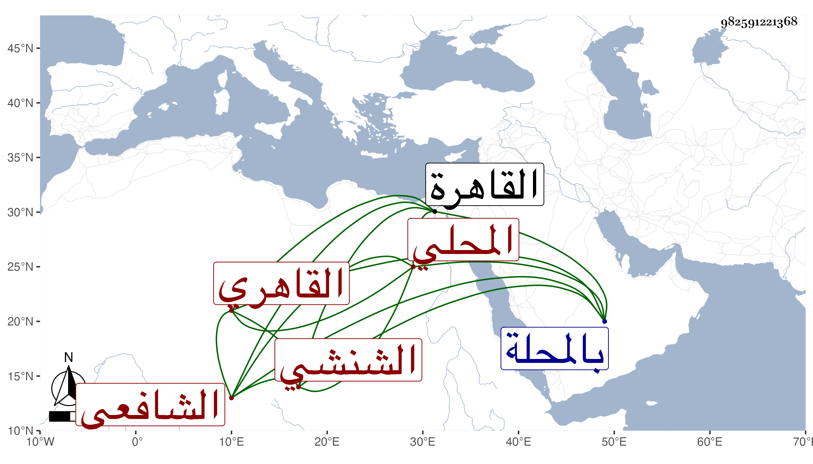

0902Sakhawi.DawLamic.ITO20230111-ara1.EIS1600.982591221368
Biography ID: 982591221368
459
أحمد بن محمد بن عمر بن محمد بن وجيه بن مخلوف بن صلح بن جبريل ابن عبد الله الشهاب أبو حامد بن القطب أبي البركات الشنشي ثم المحلي ثم القاهري الشافعي الماضي حفيده أحمد بن علي والآتي ولده وأبوه ويعرف بابن قطب . ولد سنة أربع وثمانين وسبعمائة بالمحلة ونشأ بها ثم قدم القاهرة فحفظ القرآن والتنبيه وعرضه واشتغل يسيرا وسمع مع أيبه على قريبه النور الهوريني الشفا ، وتكسب بالشهادة في ميدان القمح وغيره وقاسى فاقة ثم ناب في القضاء عن شيخنا إلى أن مات في سادس ذي الحجة سنة إحدى وأربعين بعد أن أخذ عنه بعض الطلبة .
